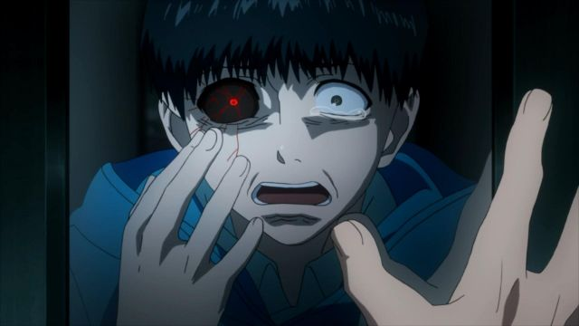
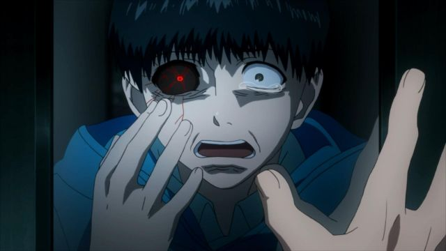

Nombre: Tokyo Ghoul Temporada 1
Tipo: Serie
Año:
Género: Acción, Fantasía, Escolar
Resolución: 1920×1080
Duración por Episodio: 30 minutos
Audios: Español Latino
Peso por Episodio: 100MB - 400MB
Calidad: 1080P
Servidor: Mediafire
En Tokyo ocurren asesinatos misteriosos cometidos por Ghouls, seres desconocidos que comen carne humana, un día Kaneki Ken un joven de 18 años que cursa la Universidad conoce a una chica en un restaurante y la invita a salir, pero luego se da cuenta que ella es un Ghoul y sufre un ataque de parte de ella, pero afortunadamente sobrevive y la muchacha muere; debido a sus heridas los médicos le hacen un transplante de riñon sin saber que la muchacha era una Ghoul y Kaneki termina convirtiéndose en un ser híbrido humano-ghoul y de ahora en adelante deberá vivir escondiéndose de los humanos.
Capturas del anime
 
